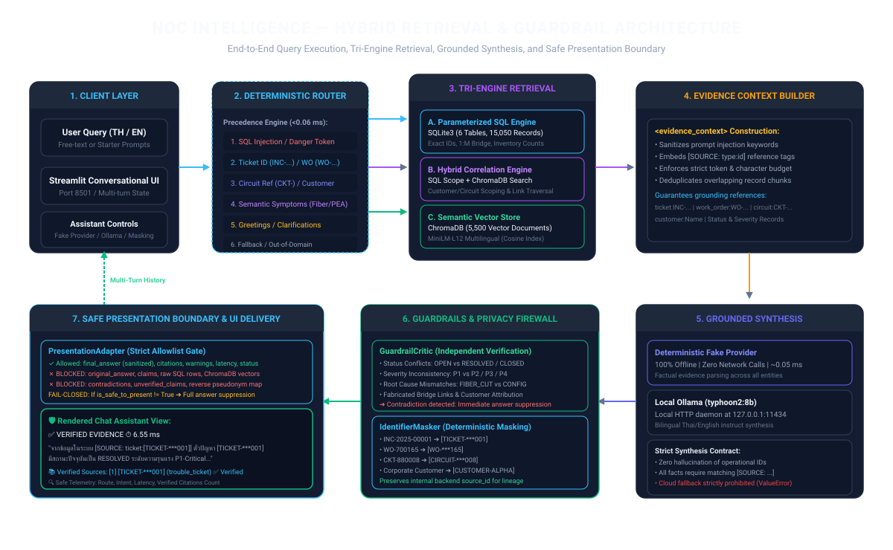
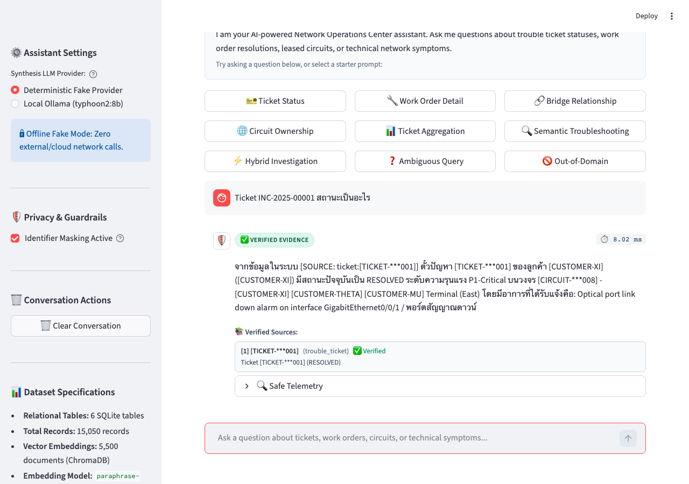
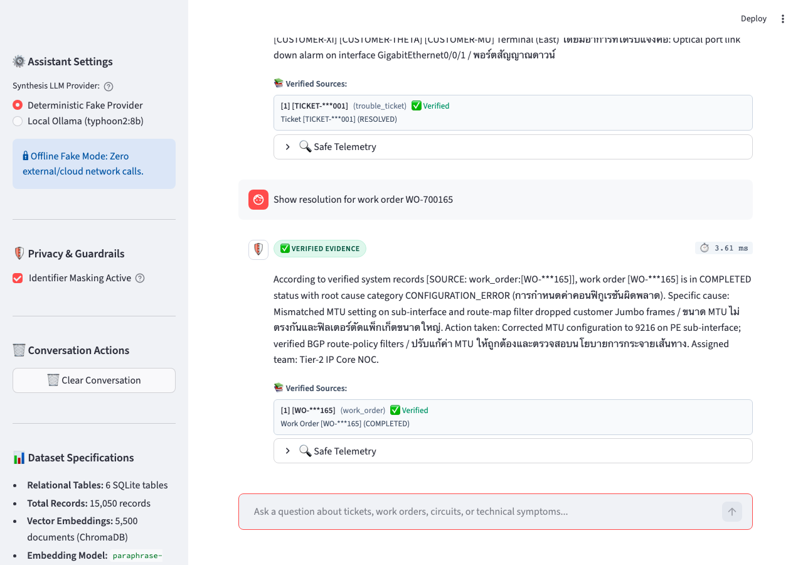
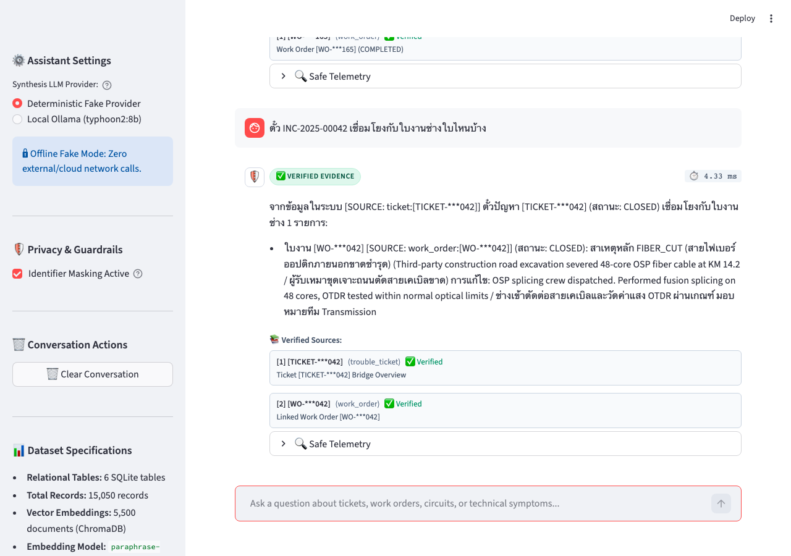
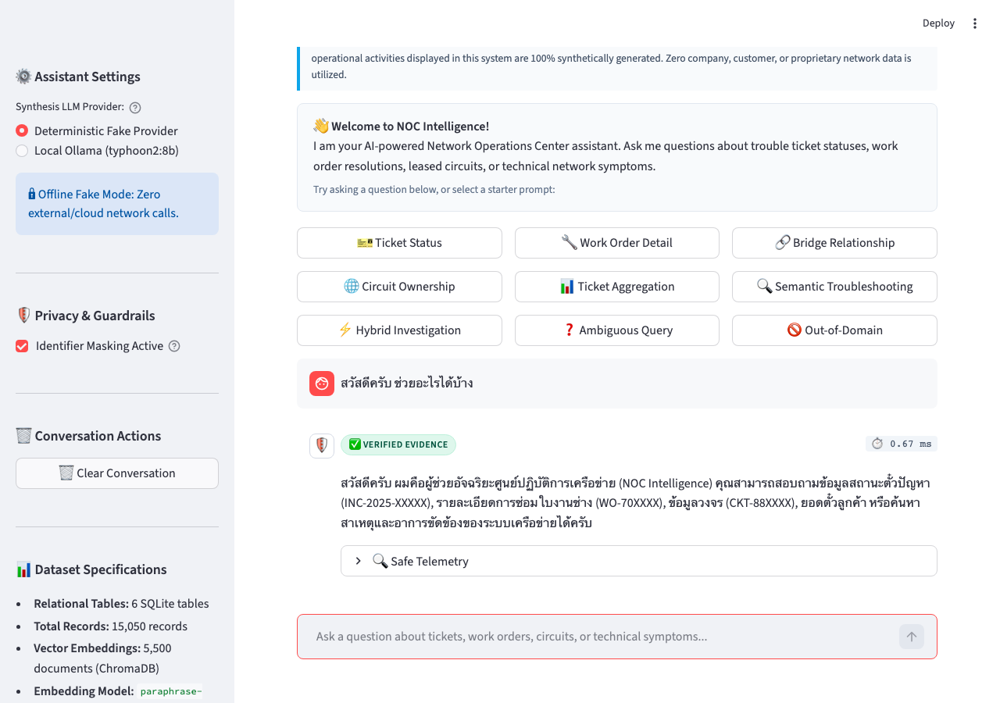
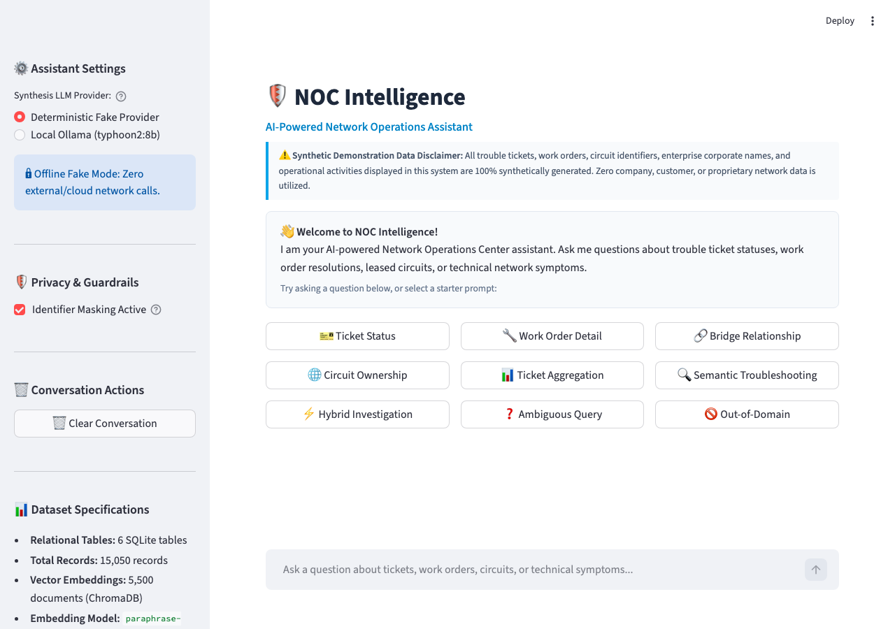

Screenshot View
Hybrid Relational-Semantic Retrieval • Deterministic Routing • Active Guardrails
An engineering portfolio case study solving the enterprise challenge of correlating customer trouble tickets
(INC-2025-XXXXX) with field engineering work orders (WO-70XXXX). Featuring sub-millisecond
deterministic intent routing, parameterized SQLite relational queries, ChromaDB multilingual vector search,
grounded LLM synthesis, independent contradiction critique, and reversible identifier pseudonymization.
Understanding the telecommunications operational friction, project goals, targeted users, and strict boundaries.
Enterprise telecommunications Network Operations Centers (NOCs) suffer from severe operational silos. When an enterprise leased circuit or fiber link fails:
Architect an independent, verifiable, end-to-end question answering system that guarantees accuracy, privacy, and speed:
[SOURCE: type:id] citations.Tailored specifically for mission-critical operations workflows:
Strictly bounded as an independent portfolio demo:
CKT-88XXXX), ticket IDs (INC-2025-XXXXX), and work orders are deterministically generated. Zero corporate or proprietary company data is used.This project is an independent AI Engineer portfolio demonstration developed by an engineer. It uses 100% synthetically generated telecommunications operational logs. It is not affiliated with, derived from, or connected to any proprietary enterprise production system.
A nine-stage pipeline guaranteeing deterministic routing, tri-engine retrieval, grounded synthesis, independent claim verification, and safe presentation filtering.

Streamlit web interface (src/ui/app.py) provides free-text input and quick starter prompts. Maintains multi-turn conversation history in st.session_state.
Strict 9-level precedence classifier (src/router/classifier.py) extracts regex entities and routes queries in 0.05 ms with zero LLM hallucination.
Dispatches to parameterized SQLite (exact IDs, bridges, counts), ChromaDB (symptoms, causes), or Hybrid (customer-scoped vector search).
Formats retrieved records into inert <evidence_context>, neutralizes prompt injection directives, deduplicates chunks, and tags stable [SOURCE: type:id] keys.
Dual-mode synthesis: Deterministic Fake Provider (100% offline, ~0.05 ms) or Local Ollama (typhoon2:8b). Strict prompt enforces factual grounding.
Extracts factual claims and performs independent contradiction checks against SQLite truth (status, severity, root cause, bridge links). Suppresses false claims on conflict.
Deterministic pseudonymization converts INC-2025-00001 to [TICKET-***001] and company names to [CUSTOMER-ALPHA] with zero leakage in user fields.
Strict allowlist gate (PresentationAdapter). Completely blocks internal diagnostic fields, raw database rows, and reverse pseudonym maps from reaching the UI.
Renders sanitized answer bubble with verified citation chips ([1] [TICKET-***001]), single-query wall-clock latency metric, and safe telemetry expander.
All technologies listed are verified, active dependencies in the repository. No unverified or aspirational tools are included.
Every feature highlighted below is implemented in production code and verified by automated test suites.
Routes incoming user questions across 5 destinations (SQL_LOOKUP, SEMANTIC_SEARCH, HYBRID_SEARCH, CLARIFICATION, and UNSUPPORTED) using strict rule precedence. Achieves 100% classification accuracy with 0.05 ms latency.
Traverses the bridge table connecting customer trouble tickets (INC-2025-XXXXX) to field engineering work orders (WO-70XXXX). Accurately queries linked dispatches, assigned teams, technician repair notes, and reverse impact tickets.
Performs dense vector retrieval over 5,500 documents in persistent ChromaDB. Searches natural language technical symptoms (e.g., optical fiber cuts, PEA commercial power outages, BGP flaps) across bilingual Thai and English technical terminology.
Combines structured SQL scoping with vector search. Automatically filters incidents by customer identity (e.g. Apex Logistics) or circuit reference (CKT-88XXXX), then applies dense semantic ranking to find root-cause resolutions.
Answers are generated exclusively from inert <evidence_context> blocks. Every factual claim is bound to explicit reference tags ([SOURCE: type:id]) that are independently verified against retrieved evidence.
An independent critic evaluates generated claims against actual SQLite records. Flags status conflicts (OPEN vs RESOLVED), severity mismatches, root-cause deviations, and fabricated bridge links. Automatically suppresses answers on material contradiction.
Protects operational privacy by masking tickets ([TICKET-***001]), work orders ([WO-***165]), circuits ([CIRCUIT-***008]), and customer names ([CUSTOMER-ALPHA]). Preserves backend source lineage while preventing client leaks.
Streamlit web interface featuring multi-turn conversation memory, quick-starter query cards, execution latency metrics, and verified source chips. Enforces a strict allowlist boundary (PresentationAdapter) that fails closed on anomalies.
Comprehensive performance metrics measured across the curated 40-case Stage 8 evaluation benchmark fixture.
| Evaluation Metric | Evaluation Formula / Basis | Measured Result | Benchmark Target | Status |
|---|---|---|---|---|
| Routing Accuracy | Correct Route / Total Queries | 100.0% (40/40) | ≥ 95.0% | ✅ Target Met |
| Entity Extraction Accuracy | Correct Entities / Entity Queries | 100.0% (30/30) | ≥ 95.0% | ✅ Target Met |
| Factual Claim Verification | Verified Claims / Extracted Factual Claims | 100.0% | ≥ 90.0% | ✅ Target Met |
| Contradiction Detection Rate | Flagged Contradictions / Contradiction Cases | 100.0% (6/6) | 100.0% | ✅ Target Met |
| Safe Degradation Rate | Safely Suppressed / Total Anomalous Cases | 100.0% (10/10) | 100.0% | ✅ Target Met |
| Identifier Leakage Rate | Leaked Masked Cases / Total Masked Cases | 0.0% (0/6) | 0.0% (Zero Leakage) | ✅ Target Met |
| End-to-End Status Alignment | Status Matches / Total Evaluation Cases | 100.0% (40/40) | ≥ 95.0% | ✅ Target Met |
| Retrieval Recall@5 | Expected IDs Found / Total Expected IDs | 83.3% | Baseline Monitored | ℹ️ Monitored |
| Retrieval Precision@5 | Relevant Hits / Total Top-5 Hits | 46.3% | Baseline Monitored | ℹ️ Monitored |
data/benchmark_40_fixtures.json). Retrieval Precision@5 reflects strict top-5 relevance on semantic search. Test results serve as internal architectural validation and regression baselines, not as external third-party certification.
Captured directly from the running Streamlit web application using automated Playwright browser testing. Click any image to expand full resolution.

Demonstrates exact SQL status lookup for INC-2025-00001. Renders verified status (RESOLVED), severity (P1-Critical), masked identifier ([TICKET-***001]), customer pseudonym, verified source chip, and expanded safe telemetry panel.

Demonstrates natural language English response to WO-700165 resolution inquiry. Correctly reports COMPLETED status, specific cause (sub-interface MTU mismatch dropping Jumbo frames), and action taken (reconfigured MTU to 9216 on PE).

Demonstrates relational bridge traversal for ticket INC-2025-00042. Traverses SQLite link table to surface associated work order [WO-***042] with FIBER_CUT root cause and 48-core fusion splicing repair details.

Demonstrates conversational greeting handling for “สวัสดีครับ ช่วยอะไรได้บ้าง”. Routes via Precedence Rule 8b to clarification, providing a friendly bilingual introduction to NOC intelligence capabilities without DB execution.

Demonstrates the initial chatbot landing page. Shows sidebar configuration (Synthesis LLM Provider toggle between Offline Fake Provider and Local Ollama typhoon2:8b, Identifier Masking toggle, dataset specifications, known masking gaps disclaimer) and one-click quick starter prompts.
Senior-level architectural rationale behind design choices, trade-offs, and failure mode mitigations.
Enterprise NOC data exists on opposite poles of the structured spectrum: tickets and circuits have rigid foreign keys and exact identifiers, whereas technical symptoms and root causes are written in free-form engineer shorthand.
INC-2025-00042). Pure SQL fails on fuzzy symptoms (e.g. “ไฟเบอร์ขาดขุดถนน”). A tri-engine architecture routes structured queries to parameterized SQL and descriptive queries to ChromaDB.
Instead of placing a heavy LLM at the routing layer, a deterministic rule-precedence classifier using precompiled regular expressions inspects entity syntax and keyword boundaries.
Retrieved database rows and vector documents are wrapped inside an inert <evidence_context> container. Text is sanitized to neutralize prompt injection directives (e.g. “ignore previous instructions”) before reaching synthesis.
Self-consistency checks performed by the generating model suffer from confirmation bias. The active guardrail critic (GuardrailCritic) runs as an independent post-generation evaluator.
OPEN while records confirm RESOLVED, the critic triggers safe degradation and suppresses the hallucinated text.
The web UI does not receive internal pipeline dictionaries or raw database objects. The PresentationAdapter maps internal results strictly to an allowlisted SafePresentationView.
original_answer, claims, contradictions, reverse pseudonym maps). If is_safe_to_present is False, the UI fails closed and suppresses the answer entirely.
Unit test suites that rely on external APIs or local LLM execution suffer from latency and non-determinism. A custom DeterministicFakeProvider was built to parse <evidence_context> directly.
Explore how the NOC Intelligence pipeline processes different query types in real time. Click a query category below to inspect router classification, retrieval targeting, evidence grounding, and masked output:
Loading...
Loading...
Honest assessment of current scope boundaries and planned future enhancements.
CLARIFICATION or UNSUPPORTED rather than guessing semantic intent.
bge-reranker-large) to improve semantic Retrieval Precision@5 from 46.3% on large document batches.
Verified commands to execute the project, run automated test suites, or launch the interactive chatbot.
streamlit run src/ui/app.py
pytest tests/ -v